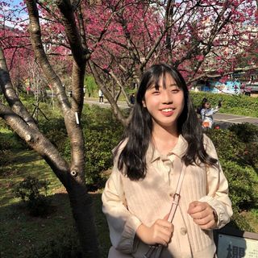
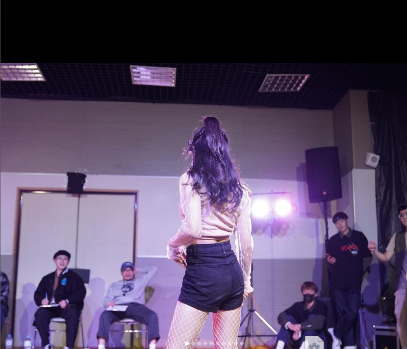

個人簡歷
丁予柔 109403203
國立中央大學 資訊管理學系
哈囉！我是目前就讀於國立中央大學，資訊管理學系二年級的丁予柔，以下是我的個人簡歷，一起來看看吧！


| 國小 |
國中 |
高中 |
大學 |
| 大勇國民小學 |
建國國民中學 |
武陵高級中學 |
國立中央大學 |
- 以議長獎成績畢業
- 作品榮獲刊登《國語日報》
- 參與多項電腦競賽
|
- 以教育局長獎成績畢業
- 就讀英語資優班
- 參與多次奧林匹亞數理競賽
- 擔任攝影社社長
|
- 擔任志工隊美宣
- 擔任自然科學研究社公關長
- 擔任班級服務股長、環保股長
- 參加全國學生音樂比賽混聲合唱榮獲「優等」
- 參加全國高級中學閱讀心得寫作比賽榮獲「特優」
|
- 就讀資訊管理學系
- 參加吉他社、天使志工社
- 擔任轉學生聯誼會會長
|
勇於挑戰與團隊合作：大學時，勇於挑戰且熱愛音樂的我加入了吉他社，學習「吉他」這項從未接觸過的樂器。雖然一開始經歷許多挫折，但在勤奮的練習及與社友們互相配合溝通下，我的程度終於從原本毫無基礎，進步到能夠與他人一同組團上台演出！
良好的溝通協調能力與領導能力：求學階段中，良好的溝通能力讓我有機會擔任各式領導職務。高中時，我在自然科學研究社舉辦的「十三校聯合迎新」這項上百人的活動中擔任總隊輔長，帶領並協調所有成員，為學弟妹們留下難忘的回憶
人溺己溺的人文關懷：從小開始，我便對公益活動十分熱衷，因此高中時毅然決然地加入了志工隊，並參與國際特赦組織寫信馬拉松、飢餓三十人道救援等活動，甚至舉辦活動陪伴弱勢孩童並擔任總召集人。上了大學的我並沒有就此止步，仍不停為社會貢獻心力，如自願前往愛兔之家擔任志工、參與校內希望天使志工社為弱勢孩童輔導課業等。至今，我所參與的志工服務時數早已超過100小時，而我也會繼續在主動服務、關懷人群的道路上前進！